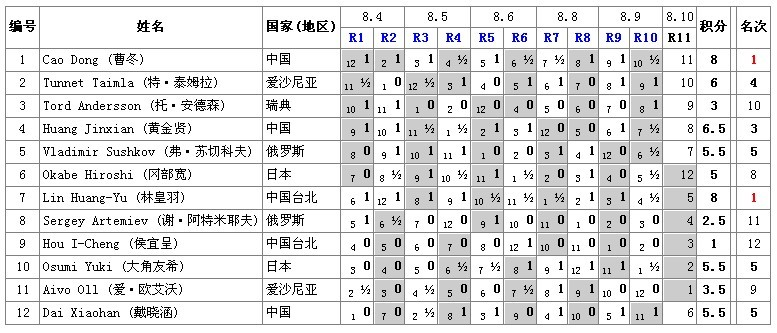

2011世锦赛AT总对阵表
#1 2011世锦赛AT总对阵表 作者：小丸.net 发表时间：2011-8-4 23:04:09

灰格表示假先方
转自励精教室
［此帖子已被 小丸.net 在 2011-8-7 23:28:52 编辑过］
［此帖子已被 雨一直下 在 2011-8-9 8:16:29 编辑过］
［此帖子已被 雨一直下 在 2011-8-10 8:01:22 编辑过］
#2 Re:2011世锦赛AT总对阵表 作者：梧桐风 发表时间：2011-8-4 23:09:18
再抢沙发#3 Re:2011世锦赛AT总对阵表 作者：蓝天蓝 发表时间：2011-8-4 23:12:20
板凳#4 Re:2011世锦赛AT总对阵表 作者：彼得兔 发表时间：2011-8-4 23:19:23
小天杯具，打强手没个能自己开局的#5 Re:2011世锦赛AT总对阵表 作者：第五象限 发表时间：2011-8-4 23:43:13

#6 Re:2011世锦赛AT总对阵表 作者：第五象限 发表时间：2011-8-5 0:01:49
Aivo Oll——曹东 冈部宽——戴小涵 Sergey Artemiev——黄金贤
最后一轮对阵
#7 Re:Re:2011世锦赛AT总对阵表 作者：小红眼镜 发表时间：2011-8-5 1:05:10
引用：
原文由 彼得兔 发表于 2011-8-4 23:19:23 :
小天杯具，打强手没个能自己开局的
 是么。。。。。。。。。。。爱伏和林皇羽童鞋听了会很不开心哦。。
是么。。。。。。。。。。。爱伏和林皇羽童鞋听了会很不开心哦。。
#8 Re:2011世锦赛AT总对阵表 作者：雨过云舒 发表时间：2011-8-5 1:33:58
为什么最后一排的倒数第四个格子里面没填5？#9 Re:2011世锦赛AT总对阵表 作者：罔两 发表时间：2011-8-5 10:41:20
因为回帖10金币，为了下轮博彩还能参与。我必须回帖~~~~#10 Re:2011世锦赛AT总对阵表 作者：掌棋如烟 发表时间：2011-8-5 10:44:08
跟住楼上,10金走人,顺带跟列车长打卡..#11 Re:2011世锦赛AT总对阵表 作者：励精 发表时间：2011-8-5 10:56:34
★★ 转帖请注明出处！★★#12 Re:Re:2011世锦赛AT总对阵表 作者：炫飞冰弦 发表时间：2011-8-5 11:41:15
引用：
原文由 罔两 发表于 2011-8-5 10:41:20 :
因为回帖10金币，为了下轮博彩还能参与。我必须回帖~~~~
#13 Re:2011世锦赛AT总对阵表 作者：这个没人用了吧 发表时间：2011-8-5 12:28:30
怎么感觉都是研究定胜负#14 Re:2011世锦赛AT总对阵表 作者：小马甲 发表时间：2011-8-5 13:03:49
第二轮后的成绩表怎么没？#15 Re:Re:Re:2011世锦赛AT总对阵表 作者：傀儡 发表时间：2011-8-5 13:36:16
引用：
原文由 炫飞冰弦 发表于 2011-8-5 11:41:15 :引用：
原文由 罔两 发表于 2011-8-5 10:41:20 :
因为回帖10金币，为了下轮博彩还能参与。我必须回帖~~~~
#16 Re:Re:2011世锦赛AT总对阵表 作者：尕孩 发表时间：2011-8-5 15:08:50
引用：有了。。。http://weibo.com/1963754035。。。。http://blog.sina.com.cn/s/blog_4b0d39980100w9wa.html?tj=1#post
原文由 小马甲 发表于 2011-8-5 13:03:49 :
第二轮后的成绩表怎么没？
#17 Re:2011世锦赛AT总对阵表 作者：三国老凯 发表时间：2011-8-5 15:56:05
带10块
今中午输了600rmb 看看能不能赚点金币回来
#18 Re:Re:2011世锦赛AT总对阵表 作者：小元 发表时间：2011-8-5 16:22:41
引用：600RMB？赌的蛮大的嘛
原文由 三国老凯 发表于 2011-8-5 15:56:05 :带10块
今中午输了600rmb 看看能不能赚点金币回来
#19 Re:2011世锦赛AT总对阵表 作者：松痕 发表时间：2011-8-5 17:06:21
这帖子排名需要及时更新。。#20 Re:Re:2011世锦赛AT总对阵表 作者：励精 发表时间：2011-8-5 17:24:58
http://www.ljrenju.cn/news/wc12/wc12.htm#rat即时更新，小丸子从这里抄来的。#21 Re:Re:2011世锦赛AT总对阵表 作者：我爱江俊男 发表时间：2011-8-5 19:04:24
比赛才刚刚开始#22 Re:2011世锦赛AT总对阵表 作者：明年近日 发表时间：2011-8-5 21:30:26
还莫更新？
#23 Re:2011世锦赛AT总对阵表 作者：隔世的风 发表时间：2011-8-5 21:34:23
★★ 转帖请注明出处！★★#24 Re:2011世锦赛AT总对阵表 作者：松痕 发表时间：2011-8-5 21:36:45
同意楼上啊。置顶了，出处没有，更新也没有。。。甩手掌柜啊。。#25 Re:2011世锦赛AT总对阵表 作者：励精 发表时间：2011-8-6 6:56:28
http://www.ljrenju.cn/news/wc12/wc12.htm#rat
更新在这里。
#31 Re:2011世锦赛AT总对阵表 作者：蓝天蓝 发表时间：2011-8-7 7:53:15
再次为中国棋手加油！#32 Re:2011世锦赛AT总对阵表 作者：清风明月月 发表时间：2011-8-8 17:28:47
跟住楼上,10金走人,顺带跟列车长打卡..#33 Re:2011世锦赛AT总对阵表 作者：天涯独行客 发表时间：2011-8-9 15:49:15
排名有误，戴晓涵3.5分第六，4分的却排在第八#34 Re:2011世锦赛AT总对阵表 作者：清风明月月 发表时间：2011-8-9 16:44:18
跟住楼上,10金走人,顺带跟列车长打卡..
#35 Re:2011世锦赛AT总对阵表 作者：百医天使 发表时间：2011-8-9 17:17:02
好久没上来看看，顺便看看我还有多少钱，#36 Re:2011世锦赛AT总对阵表 作者：松痕 发表时间：2011-8-9 19:45:16
建议把小分也统计上，然后做出排名。。#37 Re:2011世锦赛AT总对阵表 作者：nara 发表时间：2011-8-10 13:06:07
最后一轮会是怎么个状况？